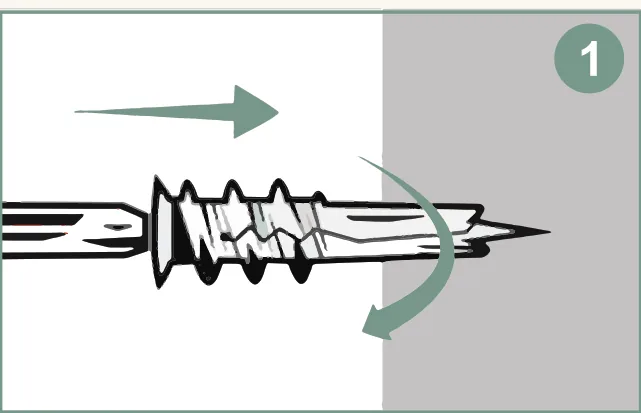
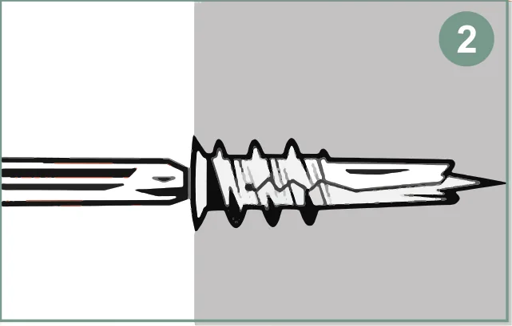
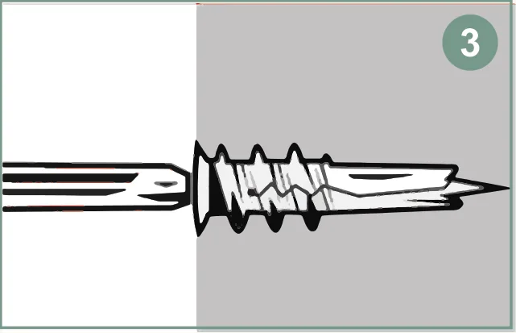
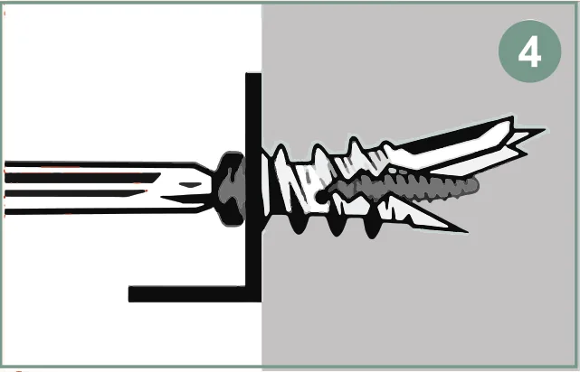
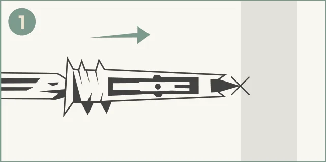
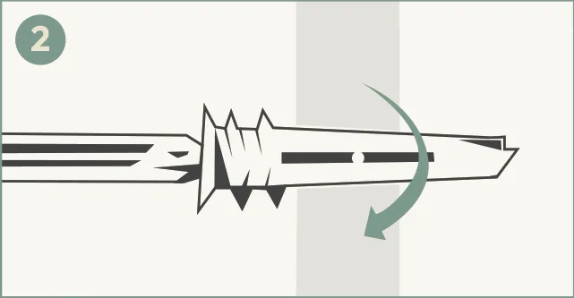
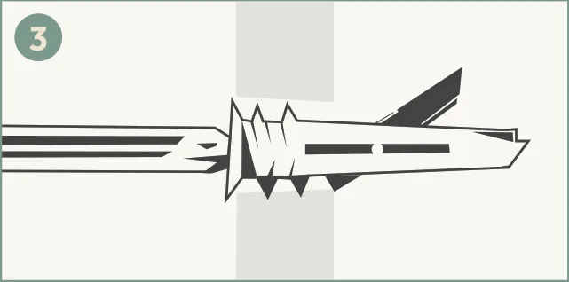
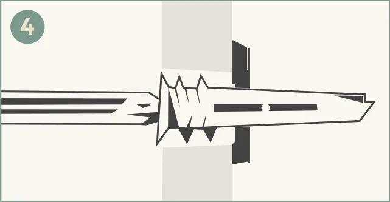

Install guides
These are the same steps and diagrams printed on our packs. Jump to zip anchors, Easy Anchor toggles or how to choose a pack.
Reinforced Nylon 66
Self-drilling zip drywall anchors
-

Step 1: Using a Phillips screwdriver or drill bit, press the anchor into your wall
-

Step 2: Apply moderate pressure and screw the anchor into the wall until it’s flush with the drywall
-

Step 3: Insert a screw into the item to hang, then drive that screw into the anchor
-

Step 4: Once the screw is halfway in, the anchor will pop. Continue until the screw is flush with the item
Toggle anchors
Easy Anchor self-drilling toggle anchors
-

Step 1: Hold anchor tip to drywall. Keep the arrow on the head vertical. Press to start. Avoid studs and wires.
-

Step 2: Turn the screwdriver while applying moderate pressure. Stop when the anchor head is flush with the wall. Make sure arrow heads are vertical before next step. Do not over-tighten.
-

Step 3: Place your fixture. Insert the screw through the bracket into the anchor, press forward firmly until the screw “pops” forward about ½ inch, then begin turning—this means the toggle has deployed behind the wall.
-

Step 4: Continue tightening until secure. Do not overtighten. The screw will stop when the toggle is tight. Watch install video on product page as needed.
The Amazon product page for each pack is linked from our Easy Anchor packs.
How to choose a pack
1. Pick the anchor
| Zip anchors | Easy Anchor toggles | |
|---|---|---|
| Hold rating (1/2 in drywall) | Up to 90 lb | Up to 100 lb |
| How it sets | The anchor pops once the screw is halfway in | The screw pops forward and the toggle opens behind the wall |
| Screw | Included | #8 × 2-1/8 in, included |
| Tools | #2 Phillips screwdriver or drill | #2 Phillips screwdriver or drill |
| Pack sizes | 10, 25, 50, 100 | 2, 5, 10, 20 |
2. Pick the pack size
- Count your holes. Add up the mounting holes for everything you plan to hang, then add a spare or two.
- One or two items: the zip 10 pack or the Easy Anchor 2 or 5 pack.
- A few rooms of projects: the zip 25 or 50 pack, or the Easy Anchor 10 pack.
- Remodels and jobsites: the zip 100 pack or the Easy Anchor 20 pack.
- Compare unit prices on Amazon. Each listing shows its current price; divide by the pack count to compare packs.
3. Check the wall
Both hold ratings are for 1/2 in drywall. Avoid studs and wires, and follow the steps above for the anchor you choose.
Questions? Email sales@morticeandtenon.us.